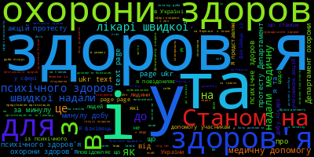

Les difficultés rencontrées lors de ce projet
Au cours de notre travail sur ce projet, nous avons dû surmonter plusieurs difficultés, dont la plupart ont été résolues avec succès. Ces problèmes peuvent être regroupés en deux catégories : ceux sur lesquels nous avons une certaine influence et ceux qui échappent à notre contrôle. Parmi ces derniers, deux méritent une mention particulière :
- L'instabilité de la réponse du serveur, avec des sites affichant initialement le code 200 pouvant ultérieurement générer une erreur 404. Bien que cela se produise rarement, après l'exécution du script, une vérification minutieuse des données du tableau s'avère nécessaire.
- L'utilisation de deux types d'apostrophes cyrilliques différentes, créant une confusion dans la collecte des données statistiques. Cette situation divise la quantité d'occurrences en deux colonnes distinctes.
- L'impossibilité d'utiliser des expressions régulières dans l'interface en ligne de iTrameur, influence aussi statistiquement les résultats obtenus.
Heureusement, les autres problèmes rencontrés n'étaient pas aussi problématiques :
- Les concordanciers de l'ukrainien ont connu des dysfonctionnements pendant un certain temps, mais nous avons finalement obtenu les résultats souhaités, bien qu'avec quelques nuances.
- Les nuages de mots générés à l'aide d'un programme Python présentaient des images remplies de mots grammaticaux, nécessitant une approche différente.

C'est pourquoi nous avons opté pour la création manuelle de nuages de mots sur le site https://www.wordclouds.com, en y ajoutant les mots fréquents tels que les noms, verbes et adjectifs. Nous avons également intégré une transition à l'aide de Javascript.
Malgr√© ces obstacles, nous avons r√©ussi √† mener le projet √† terme avec succ√®s ! Nous esp√©rons que vous l'avez trouv√© aussi captivant que nous.üçÄ